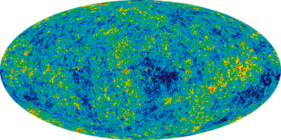

The Big Bang Theory
The Big Bang Theory (We are defining theory here as 'A rigorously tested explanation of some aspect of the natural world.' Not the everyday meaning of 'A guess') is an explanation of the origin of the universe. It states that the universe began as a very small, dense, hot point that expanded and is still expanding (There was no actual 'bang' as there was nothing for the sound to travel through).
There are two bits of evidence for the big bang that you need to know. You already saw the first one on the previous page; By looking at the redshift of many different galaxies we have found that almost all galaxies are moving away from us and that the further away they are the faster they are moving. This tells us the universe is expanding so if we 'wound time backwards' we would get a single point that the universe started as.
The second one is called Cosmic Microwave Background Radiation (CMBR). Everywhere we look with radio telescopes we detect microwave radiation. The universe has an almost uniform background radiation. We only have one explanation for this (currently) which is The Big Bang. The early universe was very hot so it emitted lots of thermal radiation which has now been redshifted to microwaves, which we detect.
Back Next